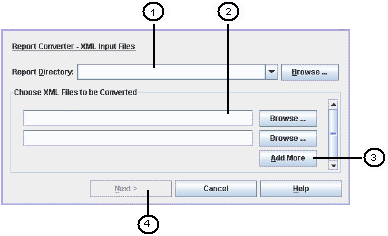
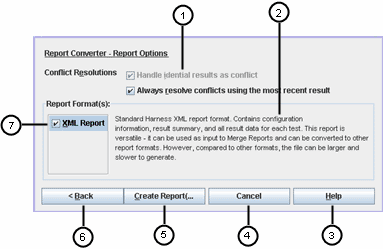

Report Converter Settings
The harness displays the Create a Report dialog box when you launch the Report
Converter Tool or when you choose Settings > New from the Report Converter
Tool menu bar. The Create a Report dialog box contains two tabbed panels, XML
Input Files and Report Options.
XML Input Files
Use the XML Input Files pane to specify the directory where the final XML
report is written and the XML files that are being merged into the completed
report.

- Report Directory field and Browse button - Sets the location of
the generated report.
- Choose XML Files to be Converted fields and Browse buttons - Specifies
the XML files used as source files to generate the report.
- Add More button -
Adds additional XML source file fields to the dialog box..
- Next button - Enabled when XML source file and a report directory
have been specified. When clicked, displays teh Report Options dialog.
Report Options
Use the Report Options pane to specify how conflicts between merged reports
are handled, choose the report format, and initiate creating the merged
report.

- Handle identical results as conflict - The default setting.
- Always resolve conflicts using the most recent results - Determines
if conflict resolution is automatic or if the user action is required.
- Help button - Displays detailed information about the dialog box.
- Cancel button - Closes the dialog box without taking further action.
- Create Report button - Generates the merged report.
- Back button - Returns to the XML Input Files tab.
Copyright © 2006, 2009, Oracle and/or its affiliates. All rights reserved.